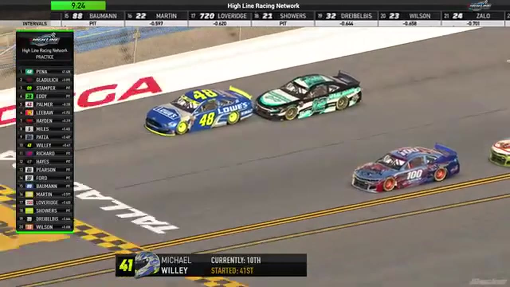

Michael Wiley
S&M
AN OFFICIAL-TAPE FOOTPRINT, NOT A RESULTS CLAIM
- Official files
- 1
- Central editions
- 0
- Exact tape cues
- 7
- Accepted podiums
- 0
Michael Wiley appears in 1 official HLRN broadcast file across Season 1. The current result ledger does not assign this driver a supported top-three finish. HLRN materials currently associate the file with S&M. The currently indexed source window runs from January 2, 2026 through January 5, 2026.
The primary chapter index supplies 7 direct jump points. No repeat track fingerprint is yet supported. The densest direct-tape categories are battle (3 cues) and restart (2 cues). Those counts describe where the name is easiest to find; they are not fault, pace, or performance grades. A source-attributed car frame is published with its original video and timestamp. That is the current discovery map for Michael Wiley.
Official name signals are used for discovery only. They do not become starts, points, incident counts, or an ability grade. This page is deliberately detailed about the tape and restrained about the unavailable competition record. Separately, 1 Highline Live file sits on the bonus shelf and never enters the official season ledger. The displayed name is labeled broadcast lower third confirmed; that status remains visible so an owner roster can strengthen or correct the identity without rewriting the evidence trail. Those boundaries define Michael Wiley's public HLRN file.
7 featured race-tape cues
These are discovery routes into complete HLRN broadcasts, not performance grades or inferred results.
- S1 / R8 · STAGE
Nick Bowman takes Talladega Stage 1 through an early wreck
Cars begin spinning as lap 20 arrives, but Nick Bowman reaches the Stage 1 line first. The scheduled caution follows while HLRN restarts its timing display and prepares the next pit cycle.
Talladega - S1 / R8 · BATTLE
Talladega stacks six rows deep in the opening draft
Michael Wiley moves high as the Gen 6 field forms three-wide lanes six to seven rows deep. Juan Escamilla controls the front while Evan Perry appears in the middle of the pack.
Talladega - S1 / R8 · BATTLE
Trevor Haley and Michael Wiley carry the Talladega lead battle
S1 / R8 at 1:36:22: The Talladega pack compresses in a front-pack fight while Trevor Haley, Michael Wiley, and Randy Showers are named on the call. The chapter keeps the live battle intact and makes no finishing-order claim.
Talladega - S1 / R8 · BATTLE
Trevor Haley and Jim Duda carry the Talladega lead battle
S1 / R8 at 1:47:18: The Talladega pack compresses in a front-pack fight while Trevor Haley, Jim Duda, Michael Wiley, and Justin Lee Pearson are named on the call. The chapter keeps the live battle intact and makes no finishing-order claim.
Talladega - S1 / R8 · RESTART
The Talladega field takes the opening green
Juan Escamilla and Larry Eddy bring the actual Talladega league field to green with Michael Wiley in the second row. The earlier Nick Bowman and Craig Martin clip belongs to the embedded Michigan recap, not this race.
Talladega - S1 / R8 · RESTART
Michael Wiley and Juan Escamilla bring Talladega back to green
S1 / R8 at 1:59:10: Michael Wiley, Juan Escamilla, Justin Lee Pearson, and Trevor Haley are in the booth's front-pack call as Talladega returns to green. The cut keeps the restart launch and the first lap of lane development together.
Talladega - S1 / R8 · INCIDENT
James Jepsen and Michael Wiley surface in the Talladega caution replay
S1 / R8 at 1:40:46: The caution sequence centers the replay call on James Jepsen, Michael Wiley, and Zack Cato. This is a source-bounded incident window; it preserves what the booth reviews without assigning unsupported fault.
Talladega
No position-specific top-three result is currently accepted. The public spelling has broadcast identity support; an owner roster can still add legal-name, number, and team-history detail.